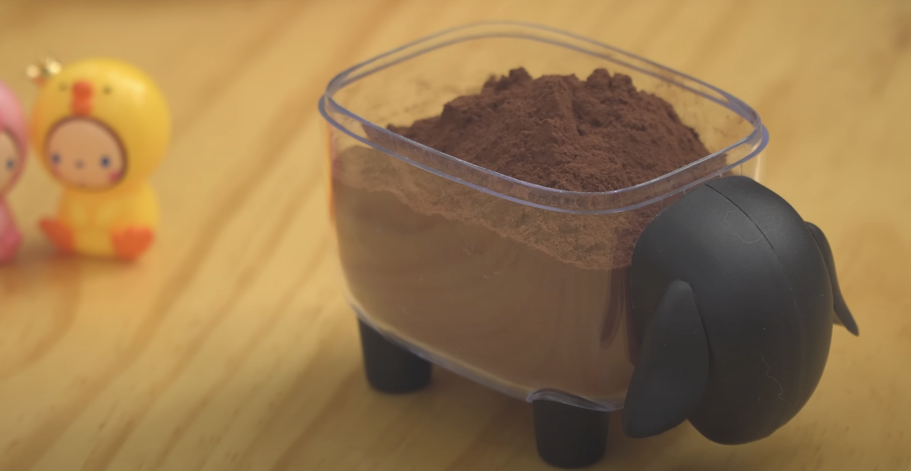
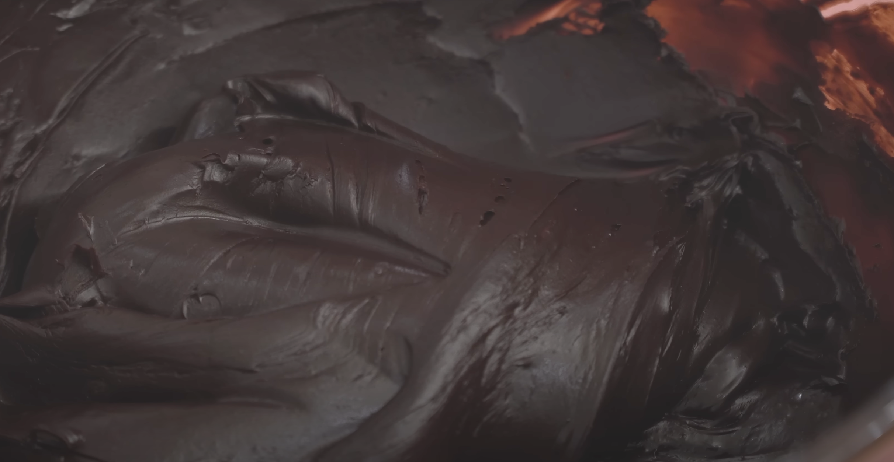

What are truffles?
Truffles are delicious bite-sized chocolate treats made from a creamy mixture of chocolate and cream. They're often rolled in cocoa, nuts, or sprinkles for extra flair. Basically, they’re rich, indulgent, and perfect for satisfying your sweet tooth!
How are truffles made?
Traditionally, truffles are made using a rich chocolate ganache, which can be a bit tricky and time-consuming. But these truffles are way easier because they use condensed milk! Just mix it with chocolate, and you’ve got a simple, creamy base that sets up perfectly. No fuss, just deliciousness!
Tips and tricks
- Any brand of cocoa powder will work.
- Don't put in the cocoa powder in batches more than the recommended amount. Overdoing the amount per batch makes the mix harden too fast and difficult to mix.
- A silicone spatula is recommended, as the mixture may stick to a wooden one.
- If the mixture is too hard, add some warmed condensed milk. If the mixture is too soft, add more cocoa powder.
What if I don't have condensed milk?
If you don't have condensed milk, you can make your own by boiling 600g milk, 170g sugar and 15g butter together. Boil until the mixture thickens. Ghee (clarified butter) works as well, and makes for a healthier alternative. For dairy-free alternatives to condensed milk, see here!
How to make condensed milk chocolate truffles
Prepare "batter": Place condensed milk in a pot and heat until boiling. Remove from heat and sift in the cocoa powder, mixing slowly until fully incorporated.
 |
 |
|---|
Refrigerate: Press the batter into a plastic wrap lined container and refrigerate for 2-3 hours, or until firmly set.
Shape truffles: Carefully remove the truffle block from the container and place on a surface dusted with cocoa powder. Cut into desired sizes and shape with hands, sifting with more cocoa powder to prevent sticking. Add any desired toppings.
To make ahead and store
This kind of truffle won't melt, and it's soft, so it's perfect for gifts or as a snack. If storing, wrap in a paper towel and place in an air-tight container for up to two weeks in the fridge.
Some other truffle coatings to try
- Finely chopped nuts (like pecans, pistachios, or hazelnuts)
- Sprinkles
- Crushed freeze-dried strawberries or raspberries
- Shredded coconut
- Crushed peppermint candy canes
How to Make
Condensed Milk Chocolate Truffles
| By: Nino's Home | Rating: | Yield: 20 truffles |
|---|
Print |
Save |
Review |
|---|
| Prep 15 mins | Refrigerate 2 hrs |
|---|
The holidays are coming. Let's make some chocolate and get a date :)) This 2-ingredient recipe is super easy and delicious!
Instructions:
- Pour 240g of condensed milk into a pot and start cooking. It boils fast, so when it starts bubbling lightly, you should take it off the stove and put it in a bowl.
- Put 100g cocoa powder into a small colander and sift part of the powder into the bowl, mixing the milk and cocoa until entirely incorporated. Repeat this step 1-2 times, until there is no more fine cocoa left. You will be left with a thick, almost frosting-like cocoa.
- Next, line a small container with plastic wrap, with a lot of extra wrap hanging over the sides. Press all of the cocoa flat into the dish, and fold the extra plastic wrap over the cocoa, pressing directly into the mix. Leave this in the fridge for 2-3 hours before continuing.
- Once you take out the cocoa, remove it with the plastic wrap still on it. After unwrapping it, place the cocoa mix on a wooden cutting board covered in a fair amount of cocoa powder, with the flat side down. Cut into even pieces, starting with crosswise cuts, then going on to lengthwise cuts.
- Sift a little more cocoa powder on top of the individual pieces to prevent sticking while shaping. With clean hands, make them into whatever shape you would like. A circle, a sphere, a rounded square, or just leave them as-is. If any cocoa falls off, sift even more cocoa powder onto the final batch. Enjoy!